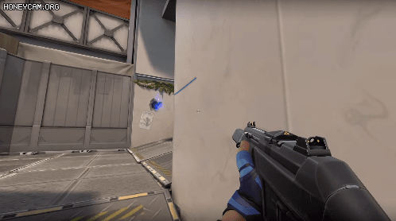
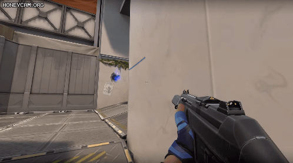

| head | |
| body | 97.9% |
| html | |
| 네트워크 수행 점수 | 평균 | ||
|---|---|---|---|
| 1반 | 1차점수 | 17 | 17 |
| 2차점수 | 17 | ||
| 2반 | 1차점수 | 17 | 0 |
| 2차점수 | 19 | ||
| 3반 | 1차점수 | 20 | 20 |
| 2차점수 | 20 | ||
| 4반 | 1차점수 | 16.5 | 17.5 |
| 2차점수 | 18.5 | ||
 

4월 26일(화) 수행평가1 안내
1. 평가영역 : 유니티 스크립팅
2. 평가요소 : Input 객체 이해하기, Transform 구현, Quaternion 구현, Physics(Rigidbody) 활용 총 10개 문항
3. 평가날짜 : 2022년 4월 26일(화) 3교시
4. 평가방법 : 실습형 ( 데스크탑으로 구현 후 제출 )
5. 평가점수 : 20점
6. 평가기준 : 9~10개 20, 7~8개 17점, 5~6개 14점, 3~4개 11점, 1~2개 8점, 수행에 참여하였으나 이제출 5점 / 기본점수 4점